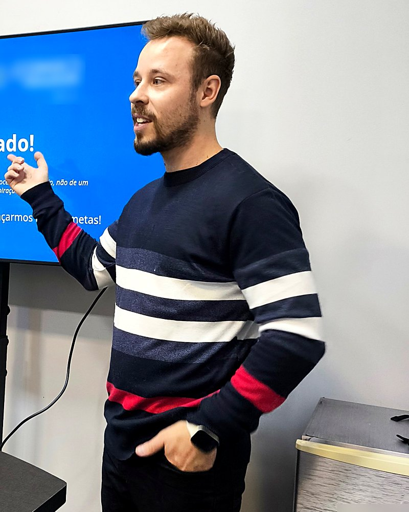

CONSULTORIA DE IMPLEMENTAÇÃO GUIADA
Ajudo empresários que faturam bem, mas vivem apagando incêndio, a colocar a empresa no rumo. Diagnóstico, plano e — principalmente — implementação feita junto com você, dentro da sua empresa.
“Eu não dou consultoria de PowerPoint. Eu entro na sua empresa e faço acontecer com você.”

RECONHECE ALGUM DESSES SINAIS?
E mesmo assim a sensação é de que a empresa não sai do lugar.
O dinheiro entra, some, e no fim do mês você não sabe direito para onde foi.
Comercial, operação, financeiro, pessoas. Ninguém decide nada sem te chamar no WhatsApp.
Muitos planos, pouca coisa sai do chão. A urgência sempre ganha da prioridade.
Sem números claros, cada decisão é no feeling — e um tiro para todo lado.
Tirar alguns dias sem nada estourar parece impossível.
Isso não é falta de capacidade. É estrutural: a empresa cresceu sem direção, sem processo e sem números para decidir. Empresa não quebra por falta de trabalho — quebra por falta de direção.
POR QUE NÃO RESOLVEU ATÉ AGORA
Provavelmente você já tentou alguma dessas. Não porque você fez errado — mas porque faltou diagnóstico personalizado, execução e acompanhamento.
Ensina o conceito. A segunda-feira continua igual.
Diagnóstico bonito, entregue na mesa. E ninguém para implementar.
Sem processo nem indicador, ninguém consegue gerir — nem o melhor gerente.
Sistema não organiza empresa. Só registra a bagunça mais rápido.
Motivação genérica, para todo mundo. A sua realidade fica de fora.
COMO EU TRABALHO
Clareza do que fazer, estrutura para executar e acompanhamento para não desistir no meio. Quatro etapas, feitas dentro da sua empresa.
Diagnóstico de financeiro, operação, comercial e time. O foco é a causa-raiz, não o sintoma.
Visão de 12 a 36 meses, as 3 metas que realmente importam e um plano que dá para executar.
Implementação junto com você: fluxo de caixa, DRE, indicadores, processos, precificação e organograma.
Encontros semanais ou quinzenais, com cobrança e ajuste de rota. O plano não vai para a gaveta.
90 DIAS
Para sair do improviso: diagnóstico, prioridades claras e a primeira estrutura funcionando.
1 ANO
Para consolidar: gestão por números, processos rodando e um time que funciona sem depender de você em tudo.
PARA QUEM É
SOLUÇÕES
O método organiza a jornada completa. Se a sua necessidade for mais pontual, cada frente também pode ser contratada separadamente.
QUEM VAI ESTAR COM VOCÊ
Consultor financeiro e empresarial. Trabalho com estratégia, planejamento, finanças, processos, indicadores e automação — sempre com o pé dentro da empresa do cliente.
Antes da consultoria, foram mais de 7 anos no lado de dentro das empresas — como assistente administrativo, analista financeiro e gerente administrativo e financeiro, em empresas de portes e setores diferentes. Vivi um dia a dia de muitos planos e pouca coisa saindo do chão. Na gerência, tive que olhar a empresa como um todo e entendi que qualquer mudança de um lado afeta o outro. É esse olhar que levo para cada cliente.
Sou formado em Ciências Contábeis, com MBA em Finanças e Educação Financeira, e cursei mestrado em Ciências Contábeis com pesquisa em controladoria e finanças. Na parte técnica, tenho certificações em Python, SQL, VBA e modelagem de dados — o que me permite transformar os dados que a empresa já tem em números para decidir.
Também dou aulas de graduação nas áreas de contabilidade e finanças e sou membro do BNI. Atendo empresas de Carlos Barbosa e da Serra Gaúcha, presencialmente e on-line.
“O que destrava uma empresa não é motivação — é decisão clara e execução real.”
DÚVIDAS FREQUENTES
Não para. A implementação acontece com a empresa rodando, começando pelo que mais trava hoje. Uma prioridade de cada vez.
É por isso que o trabalho não termina no diagnóstico. Tem acompanhamento, cobrança e ajuste de rota até a estrutura estar funcionando.
O Raio-X existe para isso. Nada de modelo pronto: primeiro entendo como a sua empresa funciona de verdade, nos números e no dia a dia.
Na maioria das empresas a poeira não baixa sozinha — ela é o sintoma. Tempo não resolve caos. Estrutura resolve.
Não, porque eu estou junto na execução. O plano é feito para ser usado na semana seguinte, não para ser apresentado.
O trabalho é pensado para a sua rotina. Parte da execução eu faço junto; a sua parte é decidir e seguir o processo.
VAMOS CONVERSAR
Uma conversa rápida, sem compromisso, para eu entender a sua empresa e ver se consigo te ajudar de verdade. Se não fizer sentido, eu te digo.
Mande “NORTE” no WhatsApp ou na DM do Instagram.